Gallery
Life on the farm and beyond
Trainings, field days, processing and exhibitions: a look inside the TOPA farmer community.


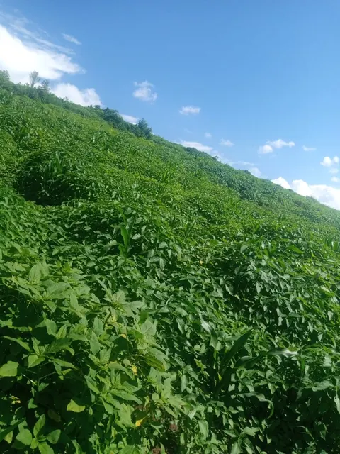
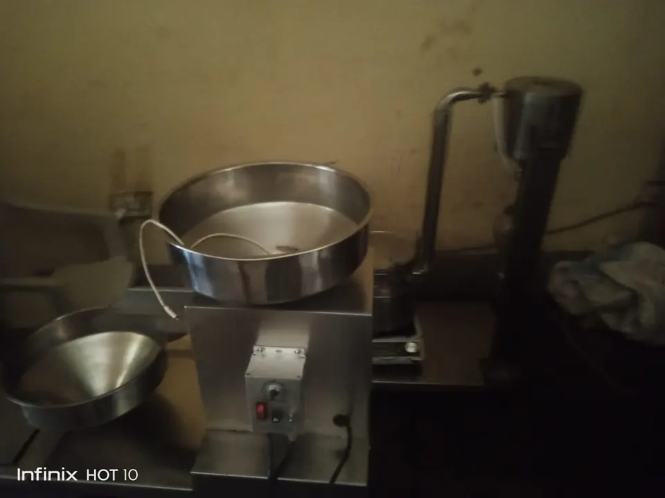

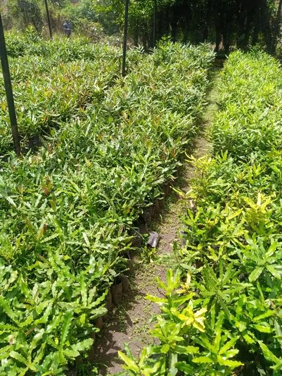
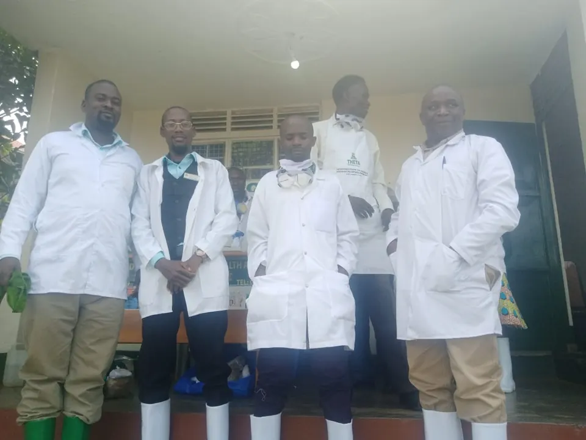
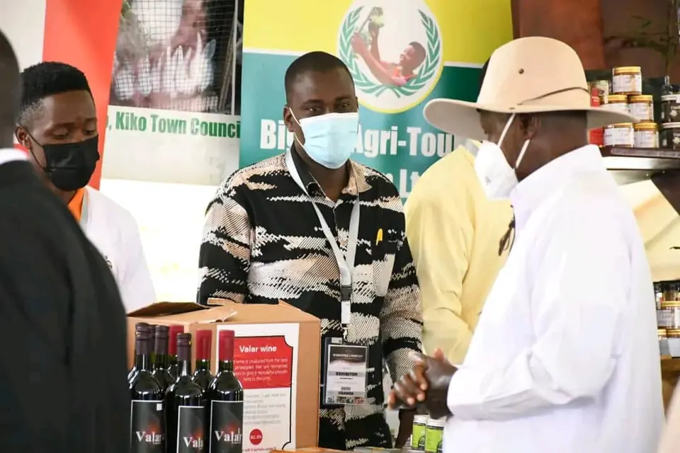
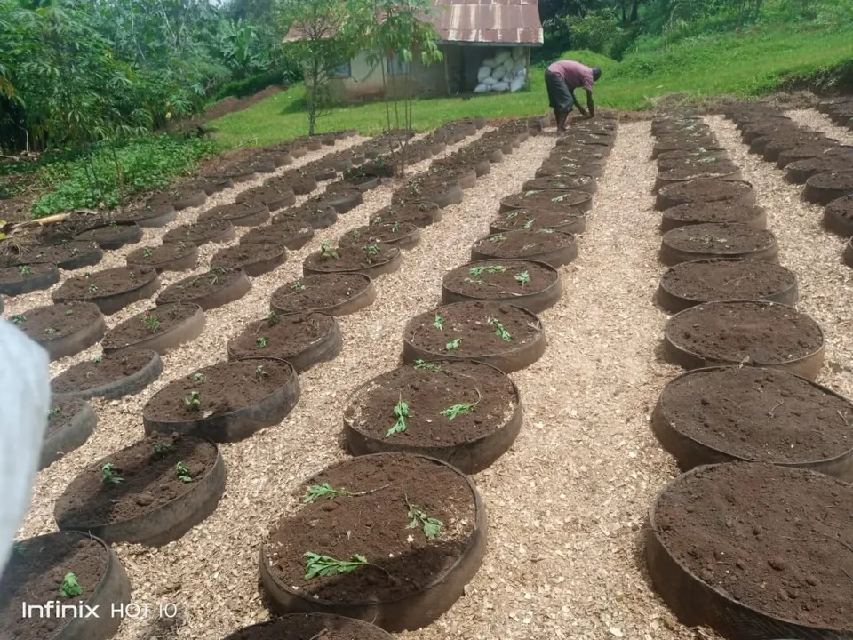
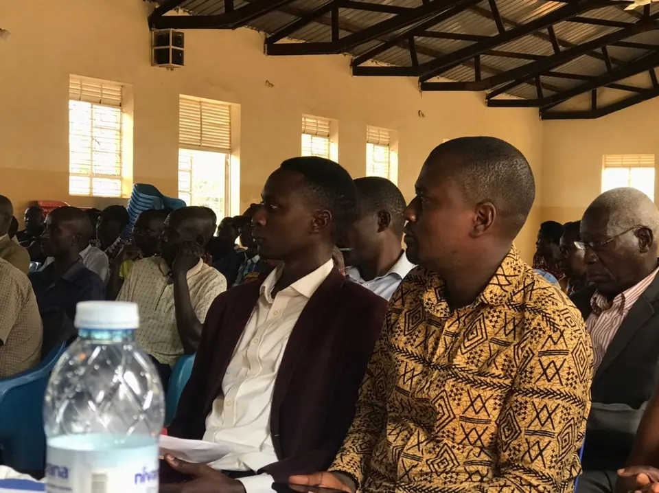


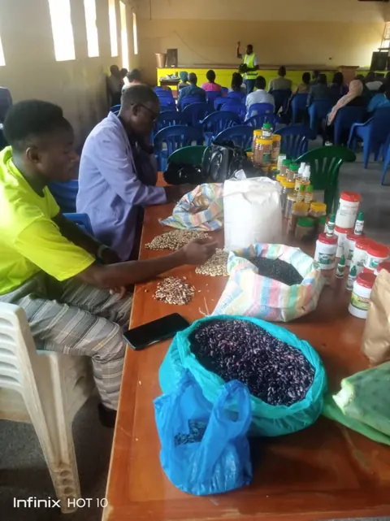
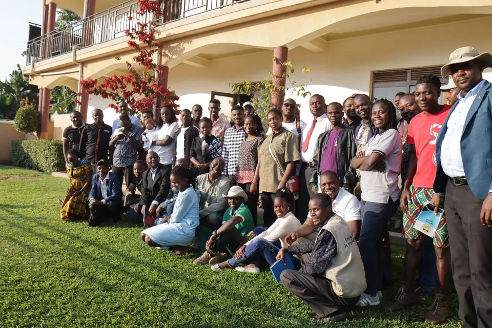


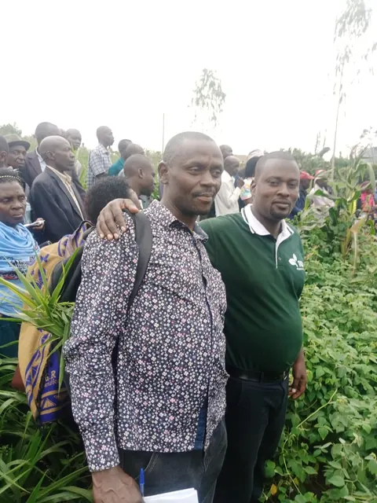
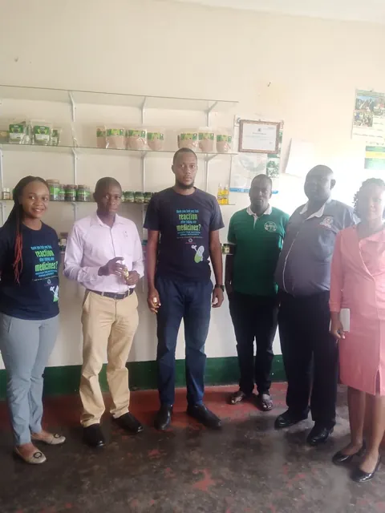

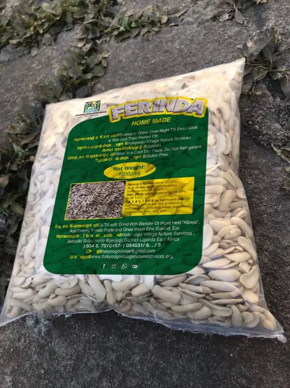
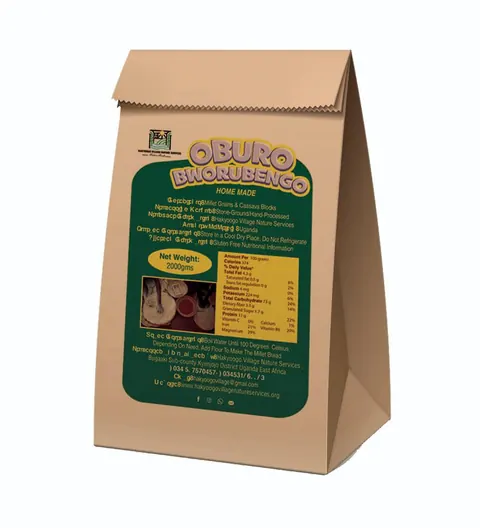
Together, we can build Africa’s organic economy.
Farmers, investors, donors, researchers and buyers: there is a place for you in Uganda’s organic transformation, including our new Chia for Brain Capital initiative.